Meine Projekte
Übersicht über praktische Arbeiten aus den Bereichen Medientechnik, Produktfotografie und Bildbearbeitung.
Fotografie & Photoshop Portfolio
Eine Auswahl meiner Bearbeitungen und Fotografien (port1.png bis port19.png). Jedes Bild zeigt einen anderen Schwerpunkt meiner Arbeit – von Compositing und Farbkorrektur bis hin zu kreativen Experimenten.
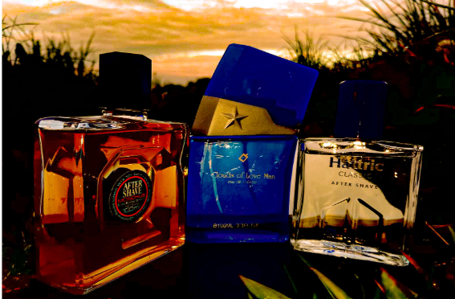
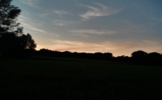
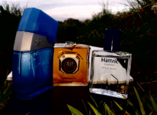
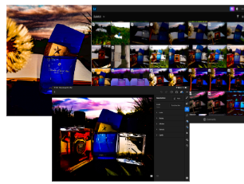
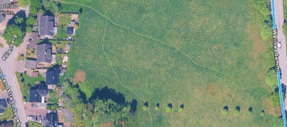
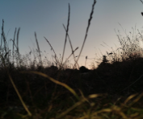
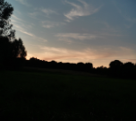
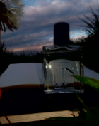
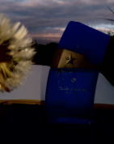
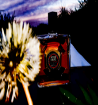
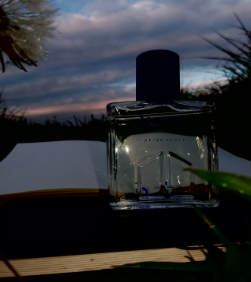
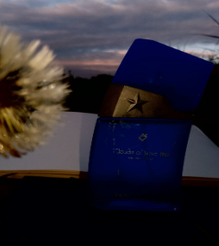
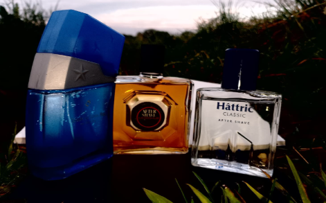
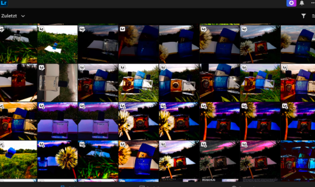
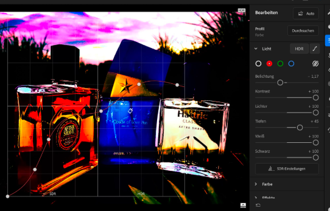
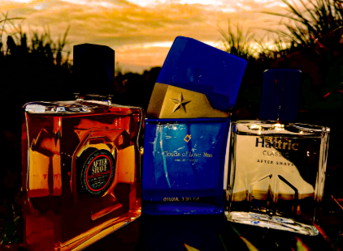
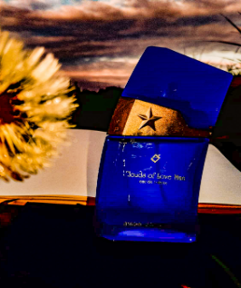
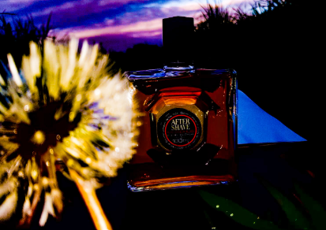
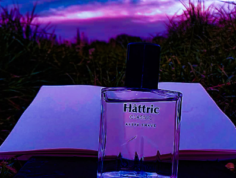
Musikproduktion mit Ableton 12
Ein Einblick in meine Arbeit als Musikproduzent. Hier dokumentiere ich meinen Prozess bei der Erstellung eines Remixes, von der Soundauswahl bis zum fertigen Arrangement.
Projekt: Remix von „Raise“ (Original von Chilli Beans.)
Software: Ableton Live 12
Schwerpunkt: Eigener Style, neue Beats, Layering und Dynamik
1. Einleitung & Deckblatt
Das Deckblatt meines Projekts wurde mit einem KI-Bildgenerator (Gemini) im „Nano Banana“-Modus erstellt. Der Master-Prompt lautete:
"Digital illustration in a vibrant Shonen anime style, depicting a classic wooden sailing ship..."
Die Nutzung des Bildes erfolgt gemäß den Richtlinien zur unzulässigen Nutzung von generativer KI (Stand: 17. Dezember 2024).
2. Ressourcen & Sound-Auswahl
- Vibrations (ModeAudio): Eine spielerische Auswahl an Loops und Samples.
- Break Selection (Sample Magic): Ein Pack mit 175 Drum-Loops.
- Singularities (Ableton): Klassische Synths und Sampler.
- Recording Hybrid Kit (Drumdrops): Multisamples-Pack eines Yamaha-Schlagzeugs.
3. Das Projekt: Remix von „Raise“
Meine Entscheidung war, den Song „Raise“ von Chilli Beans. als Basis zu nehmen und ihn komplett neu zusammenzubauen. In der Hauptansicht sieht man, wie ich eigene Sounds wie den Synthetic Choir oder die Cruiser Strings darüberlege.
4. Lied-Struktur & technische Umsetzung